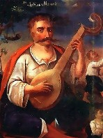
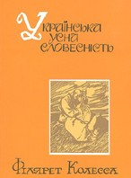
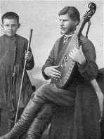
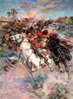
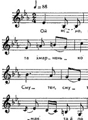

Ukrainian folk oral literature, poetry, and songs (such as the dumas) are among the most disctinctive ethnocultural features of Ukrainians as a people. The particularly vital role of folklore in the formation of modern Ukrainian culture and national consciousness was the result of an unusually important role that peasantry played in the history of Ukraine. Not only did peasants make up the overwhelming majority of the Ukrainian population until the 1930s, but they also contributed much to the preservation and development of the Ukrainian language and traditional way of life. Their conservative attitude toward traditions, language, and faith--in short, their fostering of national and ethnic characteristics, some of which extend back to pre-Christian times and even to Indo-European roots--was of great importance for the Ukrainian nation, which had been subdued by powerful neighbors and, particularly in the case of the upper classes and the urban strata, exposed to assimilatory influences. In the 19th century, folk songs and folk oral literature not only served as the basis for the reconstruction of the Ukrainian literary language, but also provided Ukrainian writers, composers, and intellectuals with the components for the creation of a modern national culture...
-

FOLKLORE. In Ukrainian folklore scholarship there is an overwhelming tendency to equate folklore with folk oral literature. In this discipline folk tales (tales of magic, animal tales, legends, anecdotes, etc), folk songs (ritual songs and non-ritual songs), and items of the minor verbal genres (proverbs and riddles) are collected and studied. Some of the above (animal tales, some songs and games, and certain types of proverbs and riddles) are children's folklore. Oral literature consists of variant texts whose authorship is unknown, the texts being passed along by word of mouth and in the process changed to some degree by each performer. Pre-Christian Ukrainian folk customs and rites were described in Arabic and Byzantine sources. Other documentation of Ukrainian folklore is found in the earliest of literary monuments in Ukraine (ie, the chronicles and Slovo o polku Ihorevi), where instances of folk prose, proverbs, and ritual songs can be found. Christianity introduced into Ukraine not only dogma but also apocryphal and classical folklore traditions...
-

FOLK ORAL LITERATURE. The sum of oral works, both poetry and prose, which are produced usually by anonymous authors and are preserved in the people's memory for a long time by being passed on orally from generation to generation. Ukrainian folk oral literature has its distinctive artistic qualities, its unique poetic devices--metaphors, similes, epithets, and symbolism. The poetic folk literature consists mostly of folk songs, which are subdivided into various genres: ritual songs (songs associated with spring rituals, including vesnianky-hahilky, carols, Kupalo festival songs, harvest songs, wedding songs and funeral songs), historical songs and dumas, lyrical songs and dance songs. Folk prose can be divided into fables, fairy tales, stories, legends, and anecdotes. Poetic-prose folk literature consists of spells, proverbs, sayings, and riddles. In the 19th century the works of folk oral literature were held to be the products of a collective popular mind. Contemporary folklorists favor the theory that individuals are the creators of the oral tradition...
-

FOLK SONGS. The song is one of the oldest and most prevalent forms of folklore. It unites a poetic text with a melody. Songs usually have a well-defined strophic structure: all stanzas are set to the same melody as the first stanza. Each stanza is often followed by a refrain. Folk songs are usually monodic choral songs, but Ukrainian folk songs are exceptional for their rich polyphony. The folk songs express the common experience of the Ukrainian people: all the important events in life from the cradle to the grave are accompanied by song. By their content and function folk songs can be divided into four basic groups: (1) ritual songs, such as carols (koliadky and shchedrivky), spring songs, songs about nymphs, and Kupalo festival songs; (2) harvest songs and wedding songs; (3) historical songs and political songs, such as dumas and ballads; and (4) lyrical songs, such as family songs, social class songs, and love songs. Chumak songs, recruits' and soldiers' songs, wanderers' songs, and cradle songs belong to separate groups...
-

HISTORICAL SONGS. A genre of folk songs that presents historical events and individuals in a generalized, artistic manner with details, names, and facts that may be inaccurate. Ukrainian historical songs appeared at the same time as the dumas, and perhaps even preceded them. They differ from the dumas in that they describe concrete historical events and figures; their story line is less developed, their emotive range is greater, and in them the lyrical element prevails over the epic element. The oldest cycle of historical songs dates back to the 16th century and depicts the Cossacks' struggle against the Tatars and Turks; the best known are the songs about Baida Vyshnevetsky of 1564 and the siege of the Pochaiv Monastery of 1675. A second cycle consists of songs about the Cossacks' struggle against Poland. A third cycle deals with Russian oppression and includes songs about construction work on the Saint Petersburg canals, the destruction of the Zaporozhian Sich, and the death of a Cossack in Russian captivity...
-

RITUAL SONGS (obriadovi pisni). Folk songs that accompanied important changes in a person's life and the seasonal cycles in farming. Calendric ritual folk songs include carols or koliadky and shchedrivky (on Christmas and Epiphany), Shrovetide songs, vesnianky-hahilky and ryndzivky (on Easter), tsarynni and rusalka songs (on the Rosalia), Saint Peter's day songs, haymowers' and rakers' songs, Kupalo festival songs, harvest songs, vechernytsi songs, and songs to Saint Nicholas. The ritual songs of family life include christening songs, wedding songs, and funeral hymns and laments. At one time ritual songs were believed to possess magical powers: they could ensure a bountiful harvest and the well-being of the persons mentioned in them. Eventually they lost their magical meaning and were regarded simply as entertaining or expressive. All ritual songs contain some ancient pagan elements mixed with more recent, mostly Christian, elements. The majority of them are tied to ritual acts, games, dances, and folk customs...